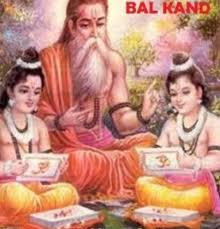
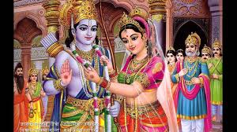
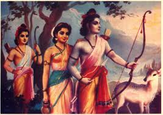
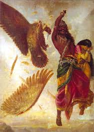
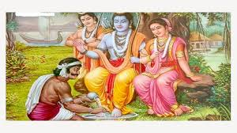
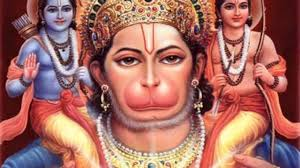
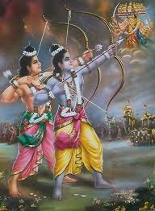

bal kand

This "Sarga" (section) details the stories of Rama's childhood and events related the time-frame. Dasharatha was the King of Ayodhya. He had three wives: Kaushalya, Kaikeyi and Sumitra. He was childless for a long time and anxious to have an heir(uttar adhikari), so he performs a fire sacrifice known as Putra-kameshti Yagna. As a consequence, Rama was first born to Kaushalya, Bharata was born to Kaikeyi, Lakshmana and Shatrughna were born to Sumitra. These sons are endowed, to various degrees, with the essence of the Supreme Trinity Entity Vishnu; Vishnu had opted to be born into mortality to combat the demon Ravana, who was oppressing the gods, and who could only be destroyed by a human. The boys were reared as the princes of the realm, receiving instructions from the scriptures and in warfare from Vashistha. When Rama was 16 years old, sage Vishwamitra comes to the court of Dasharatha in search of help against demons who were disturbing sacrificial rites. He chooses Rama, who is followed by Lakshmana, his constant companion throughout the story. Rama and Lakshmana receive instructions and supernatural weapons from Vishwamitra and proceed to destroy Tataka and many other demons.
Janak was the King of Mithila. One day, a female child was found in the field by the King in the deep furrow dug by his plough. Overwhelmed with joy, the King regarded the child as a "miraculous gift of God". The child was named "SITA". Sita grew up to be a girl of unparalleled beauty and charm. The King had decided that who ever could lift and break the heavy bow, presented to his ancestors by Shiva, could marry Sita. Sage Vishwamitra takes Rama and Lakshmana to Mithila to show the bow. Then Rama desires to lift it and goes on to break the bow and when he draws the string, it broke. Marriages were arranged between the sons of Dasharatha and daughters of Janaka. Rama marries Sita, Lakshmana to Urmila, Bharata to Mandavi and Shatrughna to Shrutakirti. The weddings were celebrated with great festivity in Mithila and the marriage party returns to Ayodhya.
ayodhya kand

After Rama and Sita have been married for twelve years, an elderly Dasharatha expresses his desire to crown Rama, to which the Kosala assembly and his subjects express their support. On the eve of the great event, Kaikeyi – her jealousy aroused by Manthara, a wicked maidservant – claims two boons that Dasharatha had long ago granted her. Kaikeyi demands Rama to be exiled(wanwas) into the wilderness for fourteen years, while the succession passes to her son Bharata. The heartbroken king, constrained by his rigid devotion to his given word, accedes to Kaikeyi's demands. Rama accepts his father's reluctant decree(adesh) with absolute submission and calm self-control which characterises him throughout the story. He is joined by Sita and Lakshmana. When he asks Sita not to follow him, she says, "the forest where you dwell is Ayodhya for me and Ayodhya without you is a hell for me." After Ram's departure, King Dasharatha, unable to bear the grief, passes away. Meanwhile, Bharata who was on a visit to his maternal uncle, learns about the events in Ayodhya. Bharata refuses to profit from his mother's wicked scheming and visits Rama in the forest. He requests Rama to return and rule. But Rama, determined to carry out his father's orders to the letter, refuses to return before the period of exile(wanwas).
aranya kand

After thirteen years of exile(wanwas), Rama, Sita and Lakshmana journey southward along the banks of river Godavari, where they build cottages and live off the land. At the Panchavati forest they are visited by a rakshasi named Shurpanakha, sister of Ravana. She tries to seduce the brothers and, after failing, attempts to kill Sita. Lakshmana stops her by cutting off her nose . Hearing of this, her brothers Khar and Dushan organise an attack against the princes. Rama defeats Khara dushan and his raskshasas.

When the news of these events reach to Ravana, he resolves to destroy Rama by capturing Sita with the help of the rakshasa Maricha. Maricha, assuming the form of a golden deer, captivates Sita's attention. Entranced by the beauty of the deer, Sita pleads with Rama to capture it. Rama, aware that this is the ploy of the rakshasas, cannot dissuade Sita from her desire and chases the deer into the forest, leaving Sita under Lakshmana's guard. After some time, Sita hears Rama calling out to her; afraid for his life, she insists that Lakshmana rush to his help. Lakshmana tries to assure her that Rama cannot be hurt that easily and that it is best if he continues to follow Ram's orders to protect her. On the verge of hysterics, Sita insists that it is not she, but Rama who needs Lakshman's help. He obeys her wish but stipulates that she is not to leave the cottage or entertain any stranger. He draws the Lakshmana rekha, around the cottage and casts a spell on it that prevents anyone from entering the boundary but allows people to exit. With the coast finally clear, Ravana appears in the guise of an sage requesting Sita's hospitality. Unaware of her guest's plan, Sita is tricked into leaving the rekha and is then forcibly carried away by Ravana.
Jatayu, a vulture, tries to rescue Sita, but is mortally wounded. At Lanka, Sita is kept under the guard of rakshasis. Ravana asks Sita to marry him, but she refuses, being eternally devoted to Rama. Meanwhile, Rama and Lakshmana learn about Sita's abduction from Jatayu and immediately set out to save her. During their search, they meet Kabandha and the ascetic Shabari, who direct them towards Sugriva and Hanuman.
kishkindha kand

Kishkindha Kand is set in the ape (Vanara) citadel Kishkindha. Rama and Lakshmana meet Hanuman, the biggest devotee of Rama, greatest of ape heroes and an adherent of Sugriva, the banished pretender to the throne of Kishkindha. Rama befriends Sugriva and helps him by killing his elder brother bali thus regaining the kingdom of Kishkindha, in exchange for helping Rama to recover Sita. However Sugriva soon forgets his promise and spends his time in enjoying his powers. The clever former ape queen Tara (wife of bali) calmly intervenes to prevent an enraged Lakshmana from destroying the ape citadel. She then eloquently convinces Sugriva to honour his pledge. Sugriva then sends search parties to the four corners of the earth, only to return without success from north, east and west. The southern search party under the leadership of prince Angada and Hanuman learns from a vulture named Sampati (elder brother of Jatayu), that Sita was taken to Lanka.
sundar kand

Sundar Kand forms the heart of Valmiki's Ramyana and consists of a detailed, vivid account of Hanuman's adventures. After learning about Sita, Hanuman assumes a gargantuan form and makes a colossal leap across the sea to Lanka. On the way he meets with many challenges like facing a Gandharva kanya who comes in the form of a demon to test his abilities. He encounters a mountain named Mainakudu who offers Hanuman assistance and offers him rest. Hanuman refuses because there is little time remaining to complete the search for mata Sita.
After entering into Lanka, he finds a demon, Lankini, who protects all of Lanka. Hanuman fights with her and subjugates her in order to get into Lanka. In the process Lankini, who had an earlier vision/warning from the gods that the end of Lanka nears if someone defeats Lankini. Here, Hanuman explores the demons' kingdom and spies on Ravana. He locates Sita in Ashoka grove, where she is being wooed and threatened by Ravana and his rakshasis to marry Ravana. Hanuman reassures Sita, giving Ram's signet ring as a sign of good faith. He offers to carry Sita back to Ram; however, she refuses and says that it is not the dharma, stating that Ramyana will not have significance if Hanuman carries her to Rama – "When Rama is not there Ravana carried Sita forcibly and when Ravana was not there, Hanuman carried Sita back to Ram". She says that Rama himself must come and avenge the insult of her abduction(apharan).
Hanuman then wreaks havoc in Lanka by destroying trees and buildings and killing Ravana's warriors. He allows himself to be captured and delivered to Ravana. He gives a bold lecture to Ravana to release Sita. He is condemned and his tail is set on fire, but he escapes his bonds and leaping from roof to roof, sets fire to Ravana's citadel and makes the giant leap back from the island. The joyous search party returns to Kishkindha with the news.
yuddha kand

Also known as Lanka Kand, this book describes the war between the army of Rama of monkeys and the army of Ravana of rakshsas. Having received Hanuman's report on Sita, Rama and Lakshmana proceed with their allies towards the shore of the southern sea. There they are joined by Ravana's renegade brother Vibhishana. The apes named Nal and Nil construct a floating bridge (known as Rama Setu) across the sea, using stones that floated on water because they had Ram's name written on them. The princes and their army cross over to Lanka. A lengthy war ensues. During a battle, Ravana's son Indrajit hurls a powerful weapon at Lakshmana, who is badly wounded. So Hanuman assumes a gigantic form and flies from Lanka to the Himalayas. Upon reaching Mount dronagiri, Hanuman was unable to identify the herb that could cure Lakshmana and so decided to bring the entire mountain back to Lanka. Eventually, the war ends when Rama kills Ravana. Rama then installs Vibhishana on the throne of Lanka.
On meeting Sita, Rama asks her to undergo an Agni Pariksha (test of fire) to prove her chastity, as he wants to get rid of the rumors surrounding her purity. When Sita plunges into the sacrificial fire, Agni, lord of fire raises Sita, unharmed, to the throne, attesting to her innocence. The episode of Agni Pariksha varies in the versions of Ramayana by Valmiki and Tulsidas. In Tulsidas's Ramacharitamanas, Sita was under the protection of Agni (see Maya Sita) so it was necessary to bring her out before reuniting with Rama.